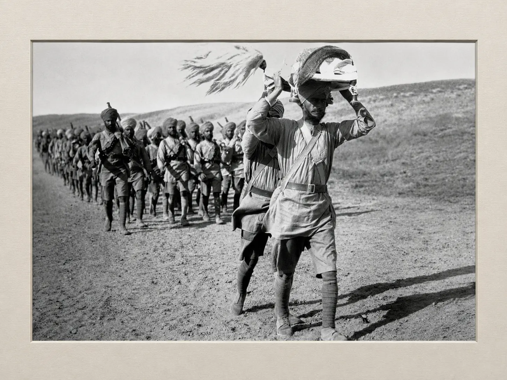
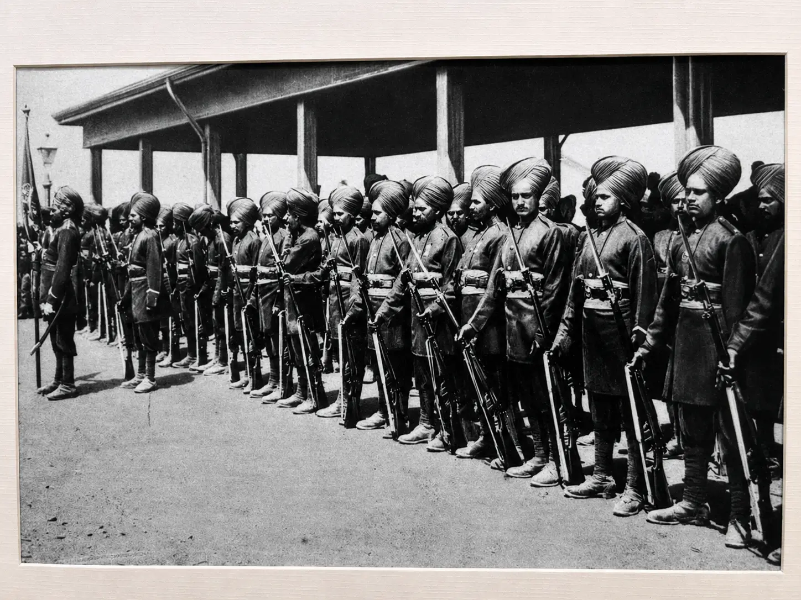
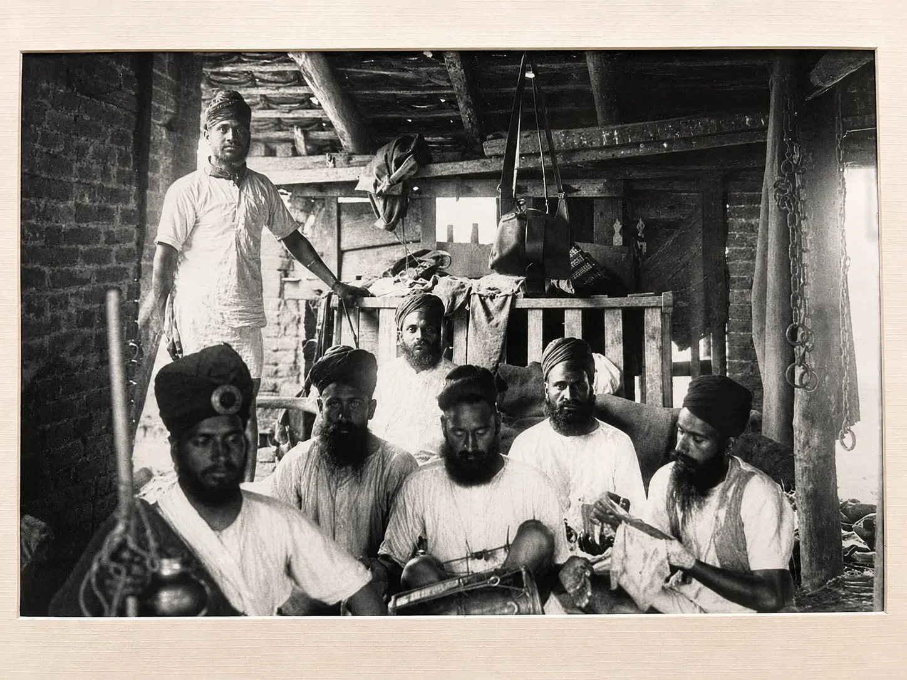
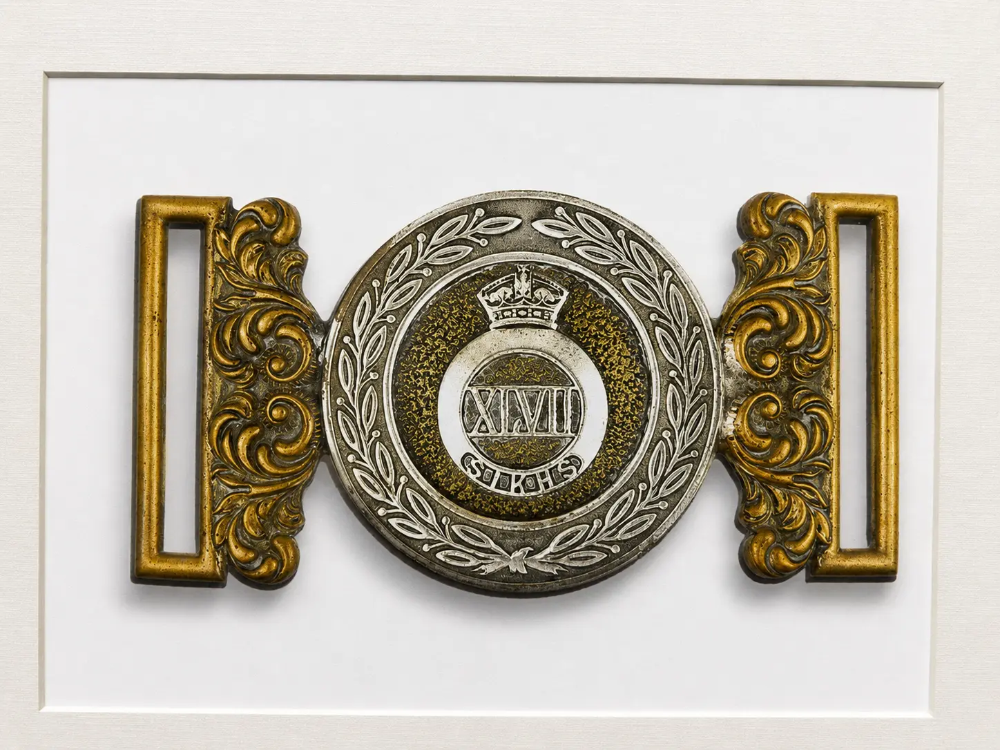
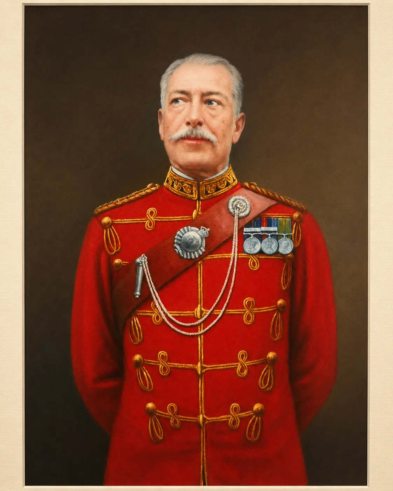
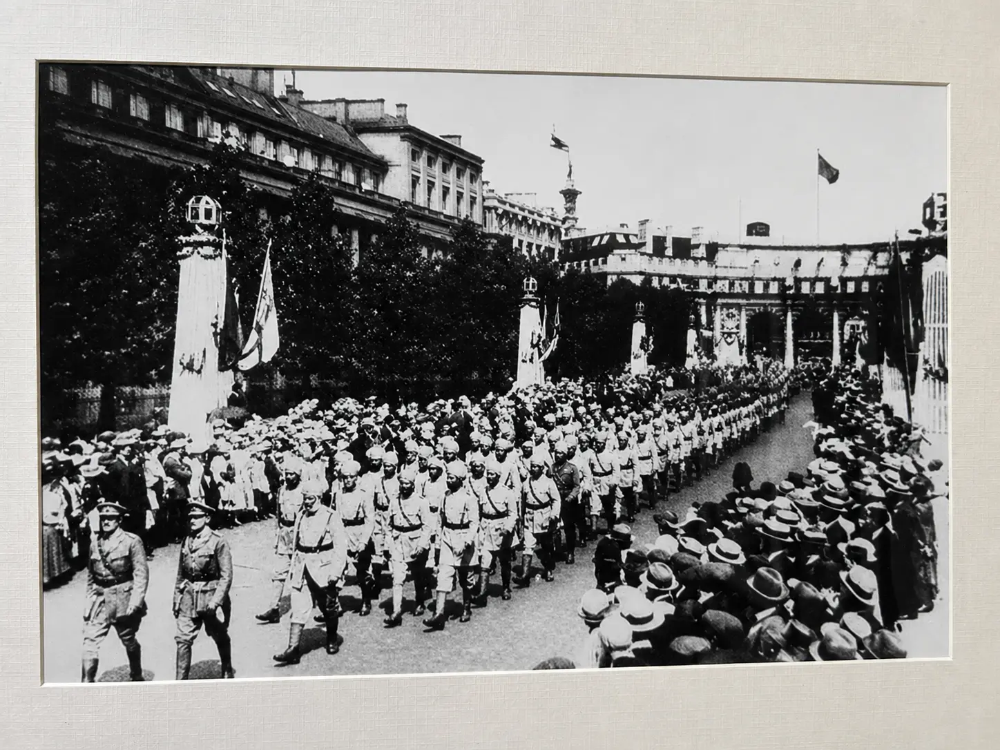
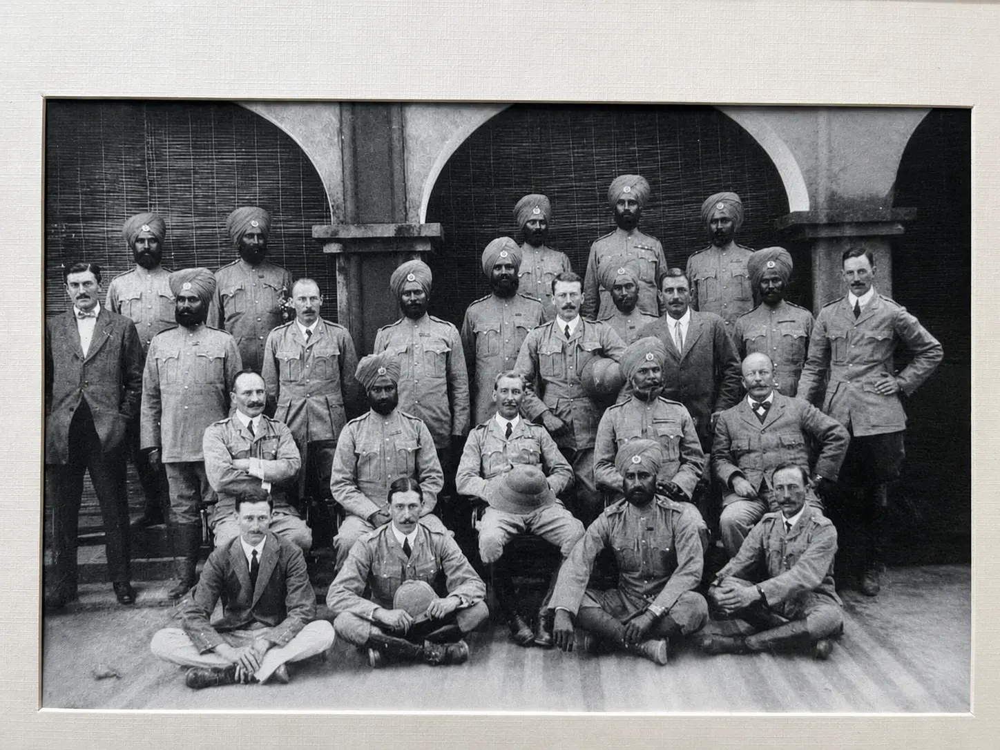
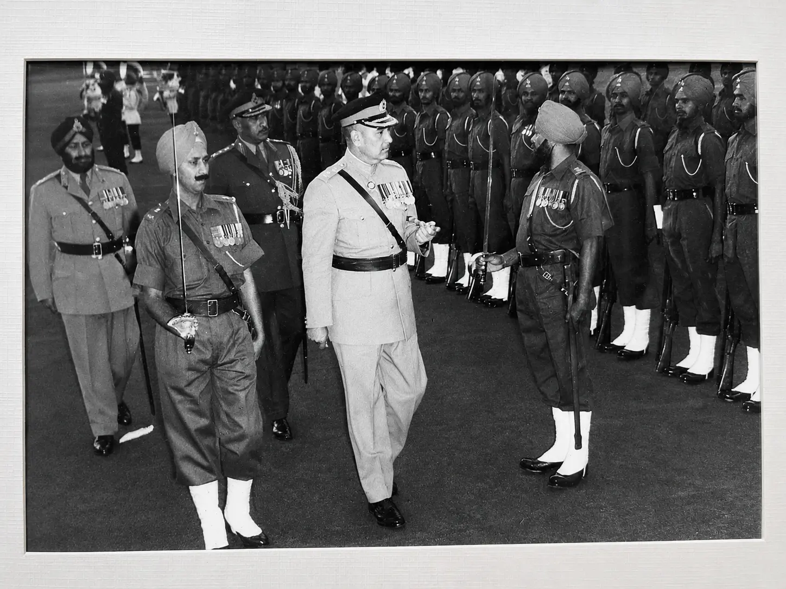

XLVII SIKHS (now 5 SIKH) was the last battalion raised in the sikh context (1901). The General Order dated 11 October 1900 issued by the Government of India certified the raising of a new battalion of the Madras Army to be designated as the "47th (Sikh) Regiment of Bengal Infantry". It was decided that the new corps would be linked with the 35th and 36th Sikh Regiments of the Bengal Infantry.
The Battalion was raised on 21 January 1901 at Sialkot under its first Commanding Officer, Lieutenant Colonel PG Walker, who originally belonged to the 20th Punjab Infantry. The Indian Native personnel required for the new raising were provided by XXXV and XXXVI SIKHS and by Punjab Regiments having Sikh troops. Lieutenant Colonel S R Davidson from the Bhopal Infantry joined the Battalion on its raising he later rose to become the first Colonel of the Sikh Regiment, in 1921. Subedar Waryam Singh of The Queen's Own Corps of Guides was appointed the first Subedar Major of the Battalion when he joined the new raising.
The minimum height required for recruits in the previous Sikh raisings was 5 feet 8 inches. Short heightened Sikhs who lost out protested that they were just as brave as their taller compatriots and it was unfair to reject them on the basis of height. Therefore, the height criterion for recruits of XLVII SIKHS was relaxed, giving the Battalion a colloquial name, "Mudra Paltan".
Scan to view this art record in Chrome on your phone.